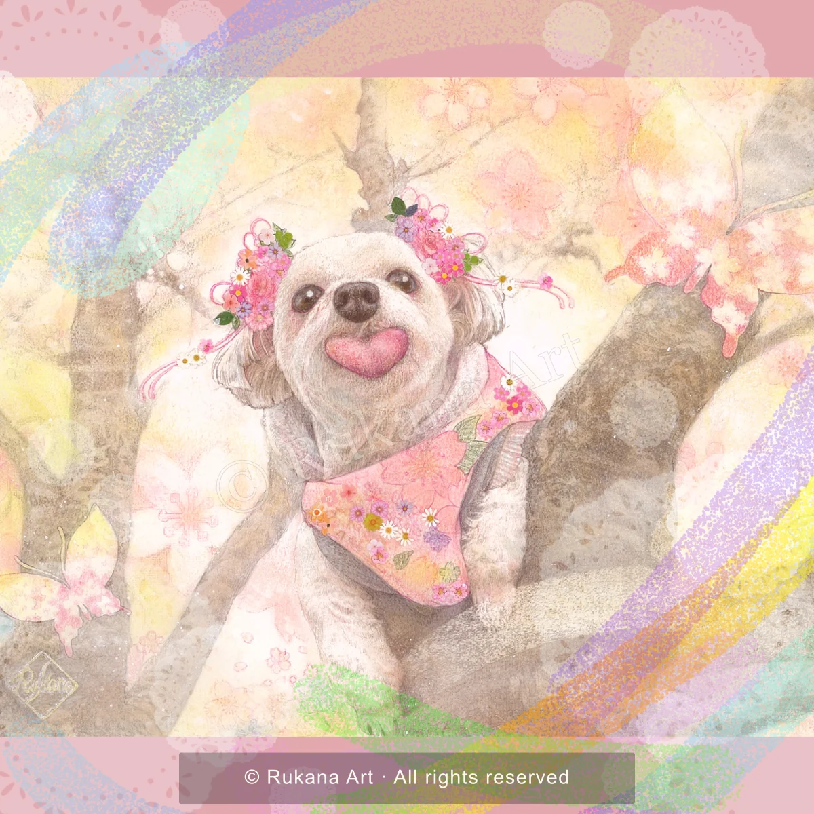

うちの子の表情
お気に入りのお写真から、目の色や毛並み、その子らしい表情を伝えてください。
PET PORTRAIT
ペット肖像画
見つめてくれる瞳も、いつもの笑顔も。大切な家族と過ごす時間を、一枚のアートへ。

A LITTLE MORE ABOUT
名前を呼んだときの表情。好きなおもちゃ。いつも一緒に歩く道。ペットとの毎日には、写真の外にもたくさんの物語があります。
お気に入りのお写真と、その子らしいエピソードをお聞かせください。かわいらしさはもちろん、ご家族が大切にしている気持ちも、肖像画のご相談の出発点に。
お気に入りのお写真から、目の色や毛並み、その子らしい表情を伝えてください。
好きなお花や季節、思い出の場所。背景に込めたいイメージもお聞かせください。
ご自宅に飾る作品や、ご家族への贈りものに。飾る場所やサイズのご希望もご相談ください。
BEFORE WE BEGIN
まだイメージが決まっていなくても大丈夫。
お伝えいただけることから、お聞かせください。
料金・制作期間・開催方法などの詳細は、ご相談時にご確認ください。
QUESTIONS & ANSWERS
お顔・目・毛並みがはっきり分かる写真がおすすめです。表情が違う写真を数枚お持ちでしたら、あわせてご相談ください。
お好きなお花や季節、イメージする色などをお聞かせください。表現できる内容はご相談時に確認します。
大切なお写真と思い出を添えてご相談ください。お写真の状態やご希望に応じて、制作できる内容を確認します。
サイズ、描く頭数、背景などのご希望をお伺いしてご案内します。記念日などがある場合は、ご希望の日程もお知らせください。
掲載作品：sakura & nana。
YOUR STORY BEGINS HERE
作品やセッションへのご質問、ご依頼のご相談は
Instagramのメッセージからお気軽にどうぞ。